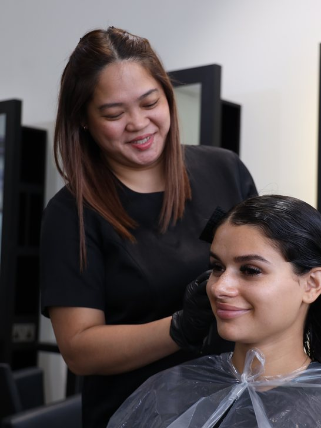
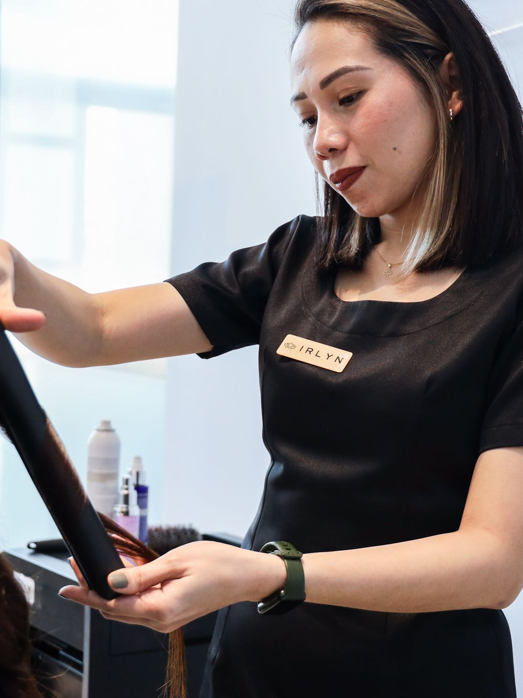
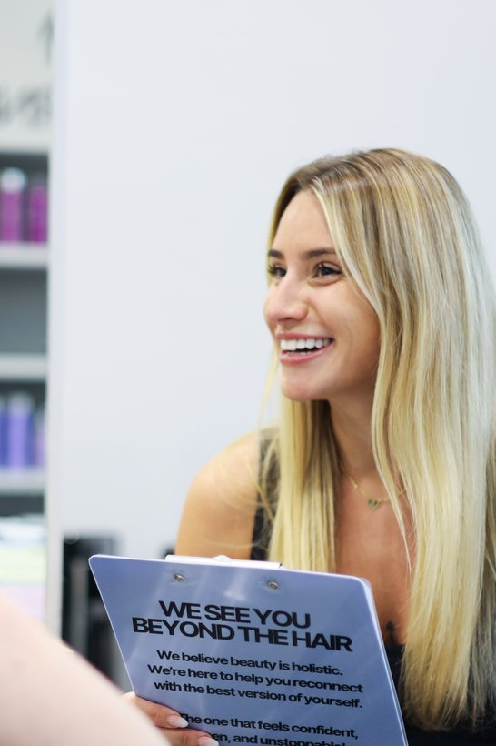

The Tone Reset
The appointment that keeps your colour looking like it was done yesterday. Toner and a blow-dry, thirty to forty-five minutes. It resets the tone before the warmth comes back.
FromAED 175 Book this →The colour day matters. But the result lives in the weeks after it: the toner that holds your colour, the treatment that protects it, the blow-dry that makes the week easier. Our junior stylists are the specialists for exactly those appointments.
Eleven years. Four salons across the UAE. · As featured in
They are specialists in what they do right now. They do more blow-dries, more maintenance treatments and more toner appointments than anyone else in the salon, and that repetition builds a particular kind of mastery.
When a junior stylist finishes a blow-dry, it is not because it was the easiest appointment available. It is because it is the thing she has chosen to perfect, and she has done more of them this month than anyone else on the floor.
Trained the Tara Rose way. Brilliant at their lane.
Every one of them works to the same eight treatment categories and the same consultation method as the rest of the team, and she is signed off by a named senior on everything she offers you, before anything is mixed.
The finish she does more of than anybody, and the one she is known for.
The small appointment with the biggest visible effect on your colour.
The ones that hold the condition your bigger visits depend on.
The colour day. The change. It does matter. But the result lives in the in-between, and those are the weeks nobody books.
The toner at week four that stops the colour drifting. The treatment that protects what was just created. The blow-dry that makes Monday morning feel manageable. Small appointments, booked on purpose rather than when something has already gone wrong.
The environment here moves your colour. Your plan holds it.
Heat, humidity and the water all work on your hair between visits, every day, whether or not anybody has planned for it. That is what the rhythm is for, and it is what your stylist writes down for you.
Nothing went wrong. But something was missed. The toner appointment at week four is what holds your colour in place between visits.
Without it, warmth creeps back in, brightness fades, and by week six you are already counting down to your next colour appointment. Most women accept that as normal. It is not normal, it is only unplanned.
With it, week eight looks like week one.
No messages. Nobody asking you something. No list of things you should be doing instead.
Just someone looking after you. That is what one of these appointments actually is, and with a junior stylist it is one you can have regularly rather than once every couple of months when you feel you have finally earned it.
You have always earned it.
Your stylist works through the 8-Step Hair Plan, the way we assess every head of hair. She asks about your hair, your routine and how long you want it to last, and then she gives you a finish that does.



You leave knowing what your hair needs next, and when. That is the part that makes the difference.
Tara Rose Kidd, Business Director of the Year three years running, inducted into the Professional Beauty Hall of Fame.
Team of the Year, four times. Colourist of the Year, and Salon Stylist of the Year.
Hair Salon of the Year at Saadiyat. Four salons across Dubai and Abu Dhabi.
I visited Tara Rose Al Quoz for the first time and had the most pleasant experience. Areanne was so kind and attentive and really took the time to find out my hair concerns and gave a great recommendation for my hair type. I had the Keratin blow dry and I am really happy with the results.Elizabeth · on Areanne, Al Quoz
She made me feel comfortable, explained everything, and did such a beautiful job. I absolutely love how my hair turned out. I’ve gotten so many compliments, and people keep asking me where I did it!Asma · on Irlyn, Khalifa City
You know that feeling of knowing without a doubt that you have finally found what you were looking for? That is how I felt today during my appointment with Edz.Marta · on Eds, Mamsha Al Saadiyat
I had an amazing experience with May! I went in for a full balayage and the results are absolutely perfect exactly what I was looking for. Not only is she incredibly talented, but she is also so kind and made the whole appointment such a pleasure.An · on May, Khalifa City
The Confidence Promise
If something does not feel right within seven days of any colour or treatment service, we invite you back to refine it. No blame, just care.
Not sure which is yours? Book anything here, or tell us what is bothering you and your stylist will choose it with you in the chair.
The appointment that keeps your colour looking like it was done yesterday. Toner and a blow-dry, thirty to forty-five minutes. It resets the tone before the warmth comes back.
FromAED 175 Book this →Not just a blow-dry. A plan. Repair, colour lock, hydration or scalp, whichever your hair needs, treated and finished in one appointment.
FromAED 150 Book this →The blow-dry you can actually keep doing. Three, prepaid, so the week starts the way you want it to rather than the way it happens to.
Three fromAED 240 Book this →For when it stops being a treat and becomes the routine. Five, prepaid, and the same stylist each time if you would like her.
Five fromAED 375 Book this →An hour that is yours, twice a week. Two blow-dries a week across four weeks, booked in advance so the slots are actually there.
Four weeks fromAED 799 Book this →Colour that stays. Because it was done properly. Root colour, a colour-lock finish and a blow-dry, for regrowth and longevity in the same visit.
FromAED 380 Book this →The full result, with the step that protects it. Full colour with bond repair worked in and a blow-dry, for colour that has been fading by week three.
FromAED 570 Book this →Stop fighting it every morning. Keratin smoothing that holds the frizz down in this humidity, with a complimentary blow-dry check-in two weeks later.
FromAED 620 Book this →Not a one-off. A proper programme. Three or five sessions of repair, colour lock, restore or scalp. One appointment improves things; a course changes them, because the repair builds session by session.
Three fromAED 315 Book this →“I don’t know what’s wrong. I just know it isn’t right.” That is the most common one of all, and it is exactly what the first appointment is for. Book anything above, or tell us on WhatsApp → and we will work it out together.
Tell us what is bothering you most. We will come back with a time, and your stylist will already know what to look at.